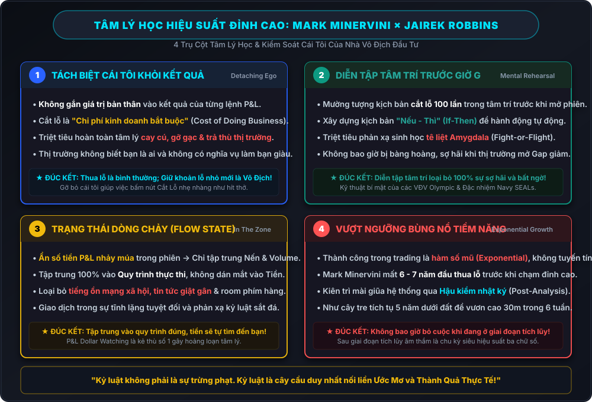

Trong phần phụ lục đặc biệt của cuốn sách "Think & Trade Like a Champion" (Cách Tư Duy và Giao Dịch Như Một Nhà Vô Địch Chứng Khoán), Mark Minervini đã thực hiện một cuộc đàm đạo chuyên sâu với chuyên gia tâm lý học hiệu suất cao hàng đầu thế giới — Jairek Robbins.
Không bàn về các chỉ báo kỹ thuật hay bảng cân đối kế toán, cuộc đối thoại tập trung vào gốc rễ sâu thẳm nhất quyết định 90% sự thành bại của một nhà đầu tư: Cấu trúc tâm trí, cách kiểm soát cái tôi, cơ chế sinh học khi đối mặt với thua lỗ và phương pháp duy trì trạng thái hiệu suất đỉnh cao (The Zone). Dưới đây là bản lược thuật và đúc kết chi tiết những bài học quý giá nhất từ cuộc phỏng vấn kinh điển này.

Phần 1: Tách Biệt Cái Tôi Khỏi Kết Quả Giao Dịch (Detaching Self-Worth from P&L)
"Mark, trong suốt sự nghiệp huấn luyện hàng ngàn trader, ông thấy rào cản tâm lý lớn nhất khiến một người thông minh thất bại thảm hại trên thị trường là gì?"
"Đó là Cái Tôi (The Ego). Đa số mọi người gắn liền lòng tự trọng và giá trị bản thân vào kết quả của từng lệnh giao dịch. Nếu lệnh thắng, họ thấy mình là thiên tài; nếu lệnh thua, họ cảm thấy bản thân là một kẻ thất bại, ngu ngốc và bất tài. Khi bạn gắn cái tôi vào thị trường, bạn không thể cắt lỗ vì thừa nhận lệnh thua đồng nghĩa với việc thừa nhận cái tôi của bạn bị tổn thương."
Khái Niệm "Chi Phí Kinh Doanh" (Cost of Doing Business)
Mark Minervini giải thích rằng một nhà đầu tư chuyên nghiệp nhìn nhận thua lỗ hoàn toàn khác với đám đông nghiệp dư:
- Người nghiệp dư: Coi mỗi lệnh cắt lỗ là một thất bại cá nhân, sinh ra tâm lý cay cú, muốn trả thù thị trường (Revenge Trading) hoặc ôm gồng lỗ đến cháy tài khoản.
- Nhà Vô Địch: Coi cắt lỗ là "Chi phí kinh doanh bắt buộc" (Operating Expense). Giống như một chủ tiệm bán hoa quả cao cấp, mỗi ngày ông ta phải vứt bỏ vài quả cam bị dập thối để bảo vệ toàn bộ sạp hàng. Bạn không thể kinh doanh nhà hàng mà không trả tiền điện nước, và bạn không thể kiếm hàng triệu USD từ chứng khoán mà không trả tiền "chi phí cắt lỗ" cho thị trường.
Phần 2: Diễn Tập Tâm Trí (Mental Rehearsal) & Kiểm Soát Sinh Học
"Trong giới vận động viên Olympic và lực lượng đặc nhiệm Navy SEALs, chúng tôi sử dụng kỹ thuật Diễn Tập Tâm Trí (Mental Rehearsal) để lập trình não bộ trước khi bước vào trận chiến. Ông đã ứng dụng điều này như thế nào để luôn giữ được sự điềm tĩnh phi thường khi thị trường sụp đổ?"
"Tôi thực hiện việc này mỗi ngày TRƯỚC KHI THỊ TRƯỜNG MỞ CỬA. Tôi nhắm mắt lại và mường tượng ra kịch bản tồi tệ nhất: Cổ phiếu tôi vừa mua mở phiên lao dốc giảm sàn, thị trường chung sập 500 điểm. Tôi nhìn thấy rõ ràng mình bấm nút đặt lệnh cắt lỗ một cách dứt khoát, không một chút do dự, không sợ hãi, không bàng hoàng. Vì tôi đã trải nghiệm cảm giác đó trong tâm trí 100 lần, nên khi nó thực sự xảy ra ngoài đời thực, tôi chỉ đơn giản là thực thi phản xạ tự nhiên."
Khắc Phục Phản Ứng Sinh Học "Chiến Đấu Hoặc Bỏ Chạy" (Fight-or-Flight)
Jairek Robbins phân tích sâu về mặt khoa học não bộ:
Khi một trader nhìn thấy tài khoản bốc hơi nhanh chóng, hạch hạnh nhân (Amygdala) trong não sẽ phát tín hiệu nguy hiểm, kích hoạt phản ứng sinh học nguyên thủy Chiến đấu hoặc Bỏ chạy (Fight-or-Flight). Lượng máu dồn về các chi, khiến vùng vỏ não trước trán (Prefrontal Cortex — nơi chịu trách nhiệm tư duy logic và ra quyết định) bị thiếu máu và rơi vào trạng thái tê liệt nhận thức (Cognitive Freeze). Đó là lý do tại sao trader đờ đẫn nhìn tài khoản trôi dần về 0 mà không thể giơ tay cắt lỗ.
Giải pháp của Nhà Vô Địch: Nhờ quá trình Diễn tập tâm trí (Mental Rehearsal) và thiết lập các kịch bản "Nếu - Thì" (If-Then Rules) định sẵn, não bộ đã quen với tín hiệu nguy hiểm và không kích hoạt báo động sinh học hoảng loạn, giúp bạn hành động chuẩn xác như một cỗ máy.
Phần 3: Trạng Thái Dòng Chảy (The Flow State) & Triệt Tiêu Tiếng Ồn P&L
Một trong những bí quyết lớn nhất giúp Mark Minervini duy trì phong độ đỉnh cao trong hàng chục năm là đạt được Trạng Thái Dòng Chảy (In The Zone / Flow State) trong mỗi phiên giao dịch:
| Yếu Tố Phân Tâm Của Đám Đông | Thói Quen Thực Chiến Của Mark Minervini |
|---|---|
| Dán mắt vào số tiền lãi/lỗ (P&L Dollar Watching): Nhìn tài khoản nhảy +10 triệu rồi -5 triệu từng giây làm tim đập thình thịch. | Ẩn số tiền P&L trong phiên: Chỉ quan sát biểu đồ nến, hành vi khối lượng và các ngưỡng Stop Loss / Pivot kỹ thuật. |
| Nghe ngóng Room chat & Diễn đàn: Bị cuốn vào các tin đồn, bài phân tích chim lợn / bìm bịp của đám đông. | Cô lập hoàn toàn (Tunnel Vision): Tắt toàn bộ mạng xã hội, tin tức giật gân, chỉ tập trung vào tín hiệu bảng điện. |
| Phán đoán tương lai: Cố gắng đoán chỉ số VN-Index hay S&P 500 ngày mai sẽ tăng hay giảm. | Phản ứng với hiện tại: Không đoán tương lai; chỉ hành động theo đúng tín hiệu giá và xác nhận dòng tiền. |
Phần 4: Vượt Qua "Ngưỡng Tích Lũy Tiềm Tàng" (Plateau of Latent Potential)
"Rất nhiều người bắt đầu học giao dịch sau 1-2 năm không có kết quả đã vội vã bỏ cuộc vì nghĩ mình không có năng khiếu. Quá trình chuyển mình của ông đã diễn ra như thế nào?"
"Tôi mất gần 6 đến 7 năm đầu tiên liên tục thua lỗ và hòa vốn. Có những lúc tài khoản gần như cháy sạch. Nhưng tôi không bao giờ nghĩ đến chuyện từ bỏ. Tôi nhận ra thành công trong trading không diễn ra theo đường thẳng (Linear), mà theo hàm số mũ (Exponential). Bạn tích lũy hàng ngàn giờ quan sát biểu đồ, hàng trăm sai lầm được mổ xẻ trong nhật ký... Toàn bộ năng lượng đó tích tụ dưới mặt đất giống như cây tre Trung Quốc mất 5 năm chỉ mọc 3cm, nhưng đến năm thứ 6 nó vươn cao 30 mét chỉ trong 6 tuần!"
Sự khác biệt duy nhất giữa một người trở thành Phù thủy giao dịch và một người vĩnh viễn thất bại là khả năng duy trì kỷ luật trong giai đoạn tích lũy âm thầm. Nếu bạn chịu khó thực hiện Hậu kiểm (Post-Analysis), ghi chép từng sai lầm và liên tục sửa đổi, khoảnh khắc bùng nổ (Breakthrough) của bạn chắc chắn sẽ đến.
Phần 5: 5 Bài Học Tâm Lý Khắc Cốt Ghi Tâm Cho Mọi Trader
- Nhận trách nhiệm 100%: Đừng đổ lỗi cho tin tức, tạo lập hay thị trường. Bạn là người kiểm soát nút bấm duy nhất.
- Cắt lỗ là chi phí, không phải thất bại: Giữ khoản lỗ nhỏ để bảo vệ sự sống còn và nguồn vốn cho cơ hội tiếp theo.
- Diễn tập tâm trí mỗi ngày: Lên kịch bản trước khi thị trường mở cửa để triệt tiêu cảm giác sợ hãi và bất ngờ.
- Tập trung vào Quy Trình, không phải Tiền: Nếu bạn thực thi quy trình chuẩn xác, tiền bạc sẽ tự động chảy vào tài khoản như một hệ quả tất yếu.
- Thành công là hàm số mũ: Kiên trì vượt qua giai đoạn khó khăn ban đầu bằng nhật ký giao dịch và học hỏi không ngừng.
Thảo Luận Kỹ Thuật & Góc Nhìn Cộng Đồng (4)